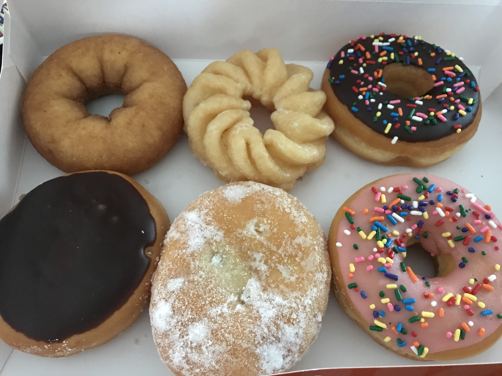
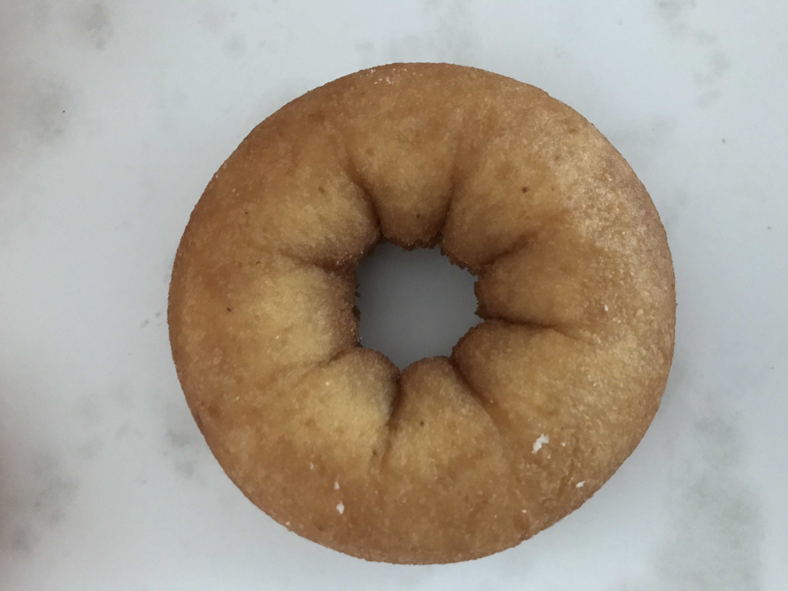
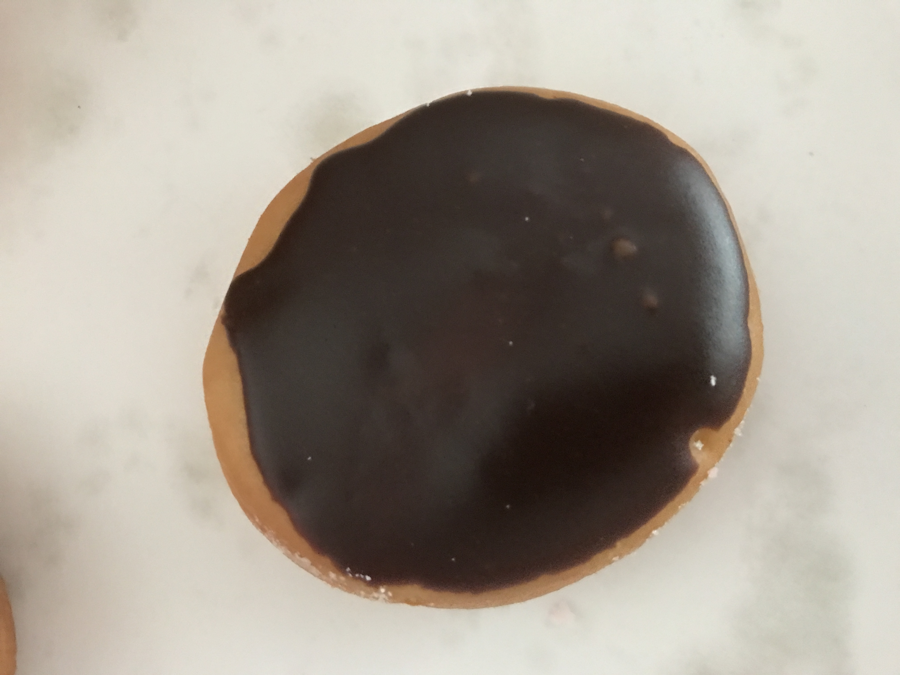
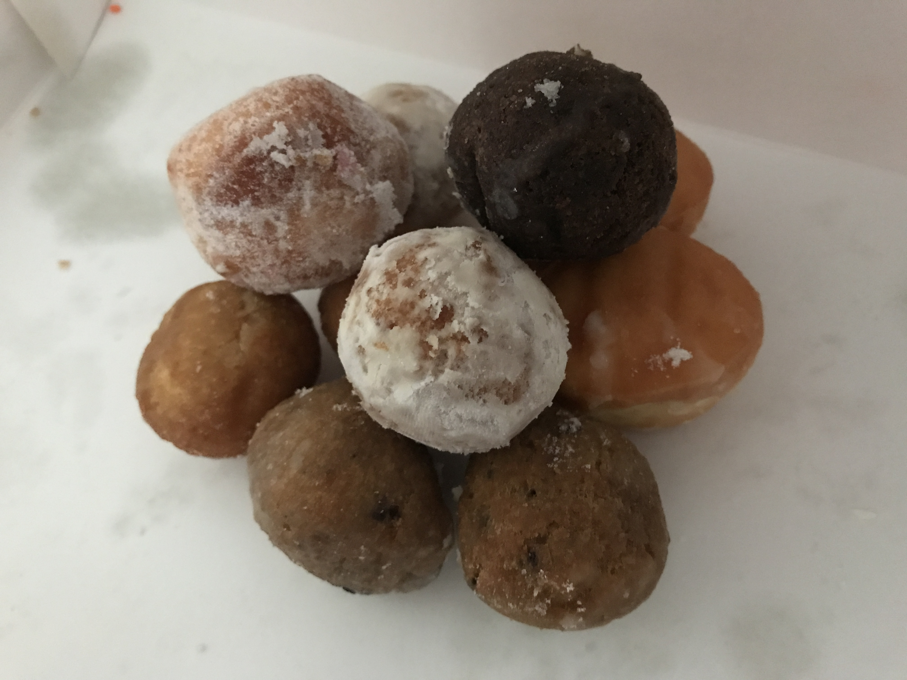
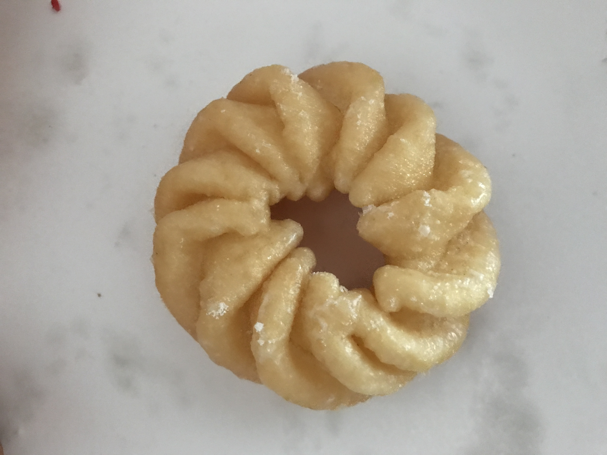

What is a Doughnut?
Doughnut
ˈdōˌnət/
noun: donut
A small fried cake of sweetened dough, typically in the shape of a ball or ring. A ring-shaped object.
Ring Doughnuts.
Ring doughnuts are formed by one of two methods: by joining the ends of a long, skinny piece of dough into a ring, or by using a doughnut cutter, which simultaneously cuts the outside and inside shape, leaving a doughnut-shaped piece of dough and a doughnut hole (from the dough removed from the center).
This smaller piece of dough can be cooked and served as a "doughnut hole" or added back to the batch to make more doughnuts. A disk-shaped doughnut can also be stretched and pinched into a torus until the center breaks to form a hole. Alternatively, a doughnut depositor can be used to place a circle of liquid dough (batter) directly into the fryer.
Filled Doughnuts.
The filled doughnut is a flattened sphere injected with fruit preserves, cream, custard, or other sweet fillings, and often dipped into powdered sugar or topped off with frosting. Common varieties include the Boston cream, coconut, key lime, and jelly.
Doughnut holes.
Doughnut holes are small, bite-sized doughnuts that were traditionally made from the dough taken from the center of ring doughnuts. Before long, doughnut sellers saw the opportunity to market "holes" as a novelty and many chains offer their own variety, some with their own brand names such as "Munchkins" from Dunkin' Donuts and "Timbits" from Tim Hortons.
Other Doughnuts
Other doughnut varieties include the French Cruller, Cronut, Fritter and the Dutchie, which are usually glazed. There are many other specialized doughnut shapes such as old-fashioned, bars or Long Johns (a rectangular shape), or with the dough twisted around itself before cooking. In the northeast U.S., bars and twists are usually referred to as crullers. Another is the beignet, which is square-shaped, covered with powdered sugar.